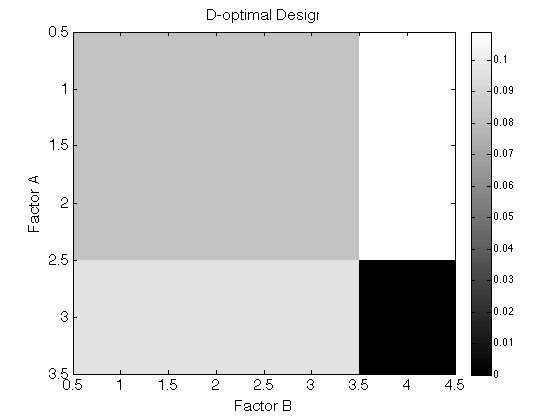
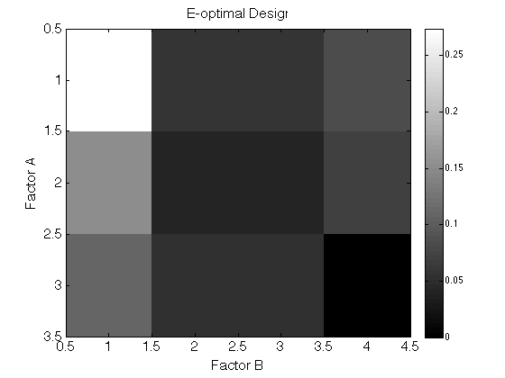
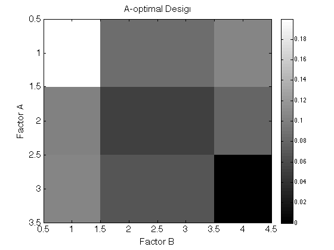
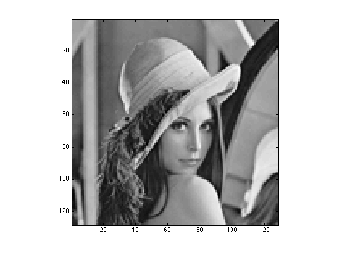
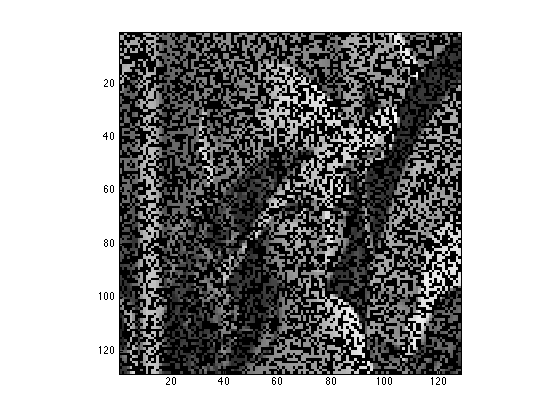
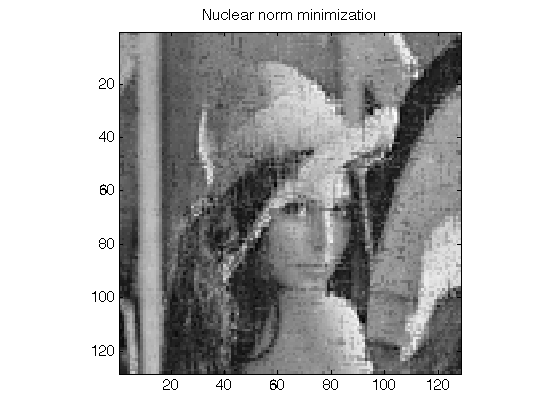
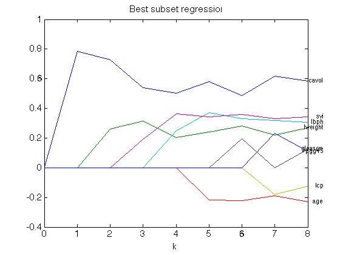
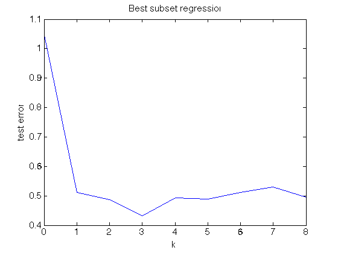
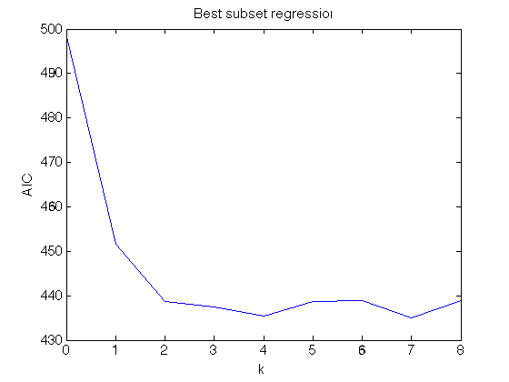
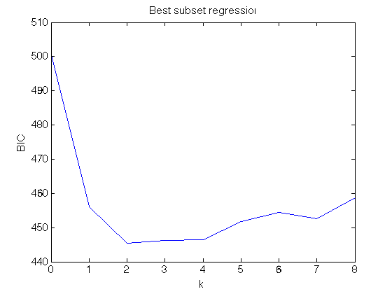

Contents
Display system information
cpuinfo
ans =
Name: 'Intel(R) Core(TM) i7-3720QM CPU @ 2.60GHz'
Clock: '2600 MHz'
Cache: '256 KB'
NumProcessors: 4
OSType: 'Mac OS/X'
OSVersion: '10.9.5'
Set cvx solver to Mosek
cvx_solver Mosek;
cvx_solver
Name Status Version Location
---------------------------------------------------------------------------
Gurobi 6.00 /Library/gurobi600/mac64
Mosek selected 7.0.0.106 {cvx}/mosek/maci64
Mosek_2 7.0.0.134 /Users/hzhou3/mosek/7/toolbox/r2013a
SDPT3 default 4.0 {cvx}/sdpt3
SeDuMi 1.34 {cvx}/sedumi
Q1 Design a 3-by-4 factorial experiment
Generate candidate design points 3-by-4 factorial design
clear; alevels = (1:3)'; blevels = (1:4)'; group = [kron(alevels, ones(length(blevels), 1)), ... kron(ones(length(alevels), 1), blevels)]; C = dummyvar(group); C(:, [1 length(alevels)+1]) = []; C = [ones(size(C, 1), 1), C]; % Make last design points unavailable C(end, :) = []; display(C)
C =
1 0 0 0 0 0
1 0 0 1 0 0
1 0 0 0 1 0
1 0 0 0 0 1
1 1 0 0 0 0
1 1 0 1 0 0
1 1 0 0 1 0
1 1 0 0 0 1
1 0 1 0 0 0
1 0 1 1 0 0
1 0 1 0 1 0
D-optimal design
[p] = optimdesign(C, 'design', 'D'); probmat = reshape([p; 0], length(blevels), length(alevels))'; display(probmat); figure; set(gca, 'FontSize', 15); imagesc(probmat); xlabel('Factor B') ylabel('Factor A') title('D-optimal Design'); colormap(gray) colorbar
probmat =
0.0820 0.0820 0.0820 0.1089
0.0820 0.0820 0.0820 0.1089
0.0968 0.0968 0.0968 0
 E-optimal design
[p] = optimdesign(C, 'design', 'E'); display(['optimal value = ' num2str(1 / min(eig(C' * diag(p) * C)))]); probmat = reshape([p; 0], length(blevels), length(alevels))'; display(probmat); figure; set(gca, 'FontSize', 15); imagesc(probmat); xlabel('Factor B') ylabel('Factor A') title('E-optimal Design'); colormap(gray) colorbar
optimal value = 13
probmat =
0.2739 0.0572 0.0572 0.0827
0.1541 0.0415 0.0415 0.0712
0.1105 0.0552 0.0552 0
 A-optimal design
[p] = optimdesign(C, 'design', 'A'); probmat = reshape([p; 0], length(blevels), length(alevels))'; display(['optimal value = ' num2str(trace_inv(C' * diag(p) * C))]); display(probmat); figure; set(gca, 'FontSize', 15); imagesc(probmat); xlabel('Factor B') ylabel('Factor A') title('A-optimal Design'); colormap(gray) colorbar
optimal value = 38.9248
probmat =
0.1999 0.0864 0.0864 0.1055
0.1006 0.0509 0.0509 0.0799
0.1042 0.0677 0.0677 0
 Display my function for finding optimal design
type optimdesign
function [p, stats] = optimdesign(C, varargin) %#ok<STOUT>
% OPTIMDESIGN Optimial experiment design
% [p] = optimdesign(X, y, p) finds a probability vector of the design points
% in C according to a user input optimality criterion.
%
% INPUT:
% C - m-by-p matrix of candidate design points. Each row is a design
% point.
%
% OPTIONAL NAME-VALUE PAIRS:
% 'cost' - m-by-1 vector, expense for each design point
%
% OUTPUT:
% p - p-by-1 probability vector
%
% Example
%
% References
%
% Copyright 2015 North Carolina State University
% Hua Zhou (hua_zhou@ncsu.edu)
% input parsing rule
m = size(C, 1);
argin = inputParser;
argin.addRequired('C', @isnumeric);
argin.addParameter('cost', ones(m, 1), @(x) isnumeric(x));
argin.addParameter('costlimit', [], @(x) isnumeric(x));
argin.addParameter('design', 'D', @(x) ischar(x));
% parse inputs
argin.parse(C, varargin{:});
cost = argin.Results.cost;
costlimit = argin.Results.costlimit;
design = argin.Results.design;
if strcmpi(design, 'D')
cvx_begin quiet
variable p(m);
maximize(det_rootn(C' * diag(p) * C));
subject to
p == simplex(m); %#ok<*EQEFF>
if ~isempty(cost) && ~isempty(costlimit)
cost' * p <= costlimit; %#ok<VUNUS>
end
cvx_end
elseif strcmpi(design, 'E')
cvx_begin quiet
variable p(m);
maximize(lambda_min(C' * diag(p) * C));
subject to
p == simplex(m);
if ~isempty(cost) && ~isempty(costlimit)
cost' * p <= costlimit; %#ok<VUNUS>
end
cvx_end
elseif strcmpi(design, 'A')
cvx_begin quiet
variable p(m);
minimize(trace_inv(C' * diag(p) * C));
subject to
p == simplex(m);
if ~isempty(cost) && ~isempty(costlimit)
cost' * p <= costlimit; %#ok<VUNUS>
end
cvx_end
end
stats = cvx_status;
end
Q2 Complete Lena
% load in original Lena clear; lena = imread('lena.png'); display(size(lena)); % Shrink to 128*128 lena128 = imresize(lena, [128 128]); figure; imagesc(lena128); colormap(gray); axis equal; axis tight; % delete entries mp = 1/2; % missing proportion rng(2015790); % random seed lenamissing = lena128; lenamissing(rand(size(lenamissing)) < mp) = 0; figure; imagesc(lenamissing); colormap(gray); axis equal; axis tight; %imwrite(uint8(lenamissing), 'lena128missing.png');
ans = 512 512 
Matrix completion by nuclear norm minimization
lenamissing = imread('lena128missing.png'); tic; lena_lambda = matcomp(lenamissing); toc; figure; set(gca, 'FontSize', 15); imagesc(lena_lambda); colormap(gray); axis equal; axis tight; title('Nuclear norm minimization');
Calling Mosek 7.0.0.106: 32897 variables, 8128 equality constraints
------------------------------------------------------------
MOSEK Version 7.0.0.106 (Build date: 2014-2-20 22:13:48)
Copyright (c) 1998-2014 MOSEK ApS, Denmark. WWW: http://mosek.com
Computer
Platform : MACOSX/64-X86
Cores : 8
Problem
Name :
Objective sense : min
Type : CONIC (conic optimization problem)
Constraints : 8128
Cones : 0
Scalar variables : 1
Matrix variables : 1
Integer variables : 0
Optimizer started.
Conic interior-point optimizer started.
Presolve started.
Linear dependency checker started.
Linear dependency checker terminated.
Eliminator - tries : 0 time : 0.00
Eliminator - elim's : 0
Lin. dep. - tries : 1 time : 0.00
Lin. dep. - number : 0
Presolve terminated. Time: 0.01
Optimizer - threads : 8
Optimizer - solved problem : the primal
Optimizer - Constraints : 8128
Optimizer - Cones : 0
Optimizer - Scalar variables : 0 conic : 0
Optimizer - Semi-definite variables: 1 scalarized : 32896
Factor - setup time : 8.36 dense det. time : 0.00
Factor - ML order time : 5.43 GP order time : 0.00
Factor - nonzeros before factor : 3.30e+07 after factor : 3.30e+07
Factor - dense dim. : 0 flops : 1.79e+11
ITE PFEAS DFEAS GFEAS PRSTATUS POBJ DOBJ MU TIME
0 2.4e+02 5.0e-01 1.3e+02 0.00e+00 1.280000000e+02 0.000000000e+00 1.0e+00 8.42
1 1.3e+01 2.7e-02 6.9e+00 -1.00e+00 2.394008430e+03 2.283713675e+03 5.3e-02 12.94
2 1.5e+00 3.1e-03 7.9e-01 -1.00e+00 2.082879169e+04 2.086277770e+04 6.1e-03 17.59
3 8.3e-01 1.8e-03 4.5e-01 -9.64e-01 3.511707167e+04 3.525920159e+04 3.5e-03 22.38
4 6.8e-01 1.4e-03 3.7e-01 -4.43e-01 3.419341041e+04 3.428619547e+04 2.9e-03 27.23
5 2.7e-01 5.7e-04 1.5e-01 -4.67e-02 3.972268683e+04 3.976055399e+04 1.1e-03 32.04
6 6.6e-02 1.4e-04 3.6e-02 9.54e-01 3.757336151e+04 3.757728896e+04 2.8e-04 36.86
7 1.1e-02 2.4e-05 6.2e-03 9.82e-01 3.775521477e+04 3.775600065e+04 4.8e-05 41.60
8 1.9e-03 3.9e-06 1.0e-03 1.00e+00 3.774648353e+04 3.774664321e+04 7.8e-06 46.36
9 2.8e-04 5.9e-07 1.5e-04 1.00e+00 3.773547695e+04 3.773550503e+04 1.2e-06 51.11
10 3.9e-05 8.3e-08 2.1e-05 1.00e+00 3.773309512e+04 3.773309953e+04 1.7e-07 55.79
11 5.7e-06 1.2e-08 3.1e-06 1.00e+00 3.773270091e+04 3.773270161e+04 2.4e-08 60.47
12 8.1e-07 1.7e-09 4.4e-07 1.00e+00 3.773263734e+04 3.773263744e+04 3.4e-09 65.11
13 1.2e-07 2.6e-10 7.8e-08 1.00e+00 3.773262791e+04 3.773262793e+04 5.2e-10 69.76
14 3.6e-08 6.7e-11 2.1e-08 1.00e+00 3.773262650e+04 3.773262651e+04 1.3e-10 74.41
15 3.6e-08 6.7e-11 2.1e-08 9.69e-01 3.773262650e+04 3.773262651e+04 1.3e-10 79.36
Interior-point optimizer terminated. Time: 79.36.
Optimizer terminated. Time: 79.46
Interior-point solution summary
Problem status : PRIMAL_AND_DUAL_FEASIBLE
Solution status : NEAR_OPTIMAL
Primal. obj: 3.7732626499e+04 Viol. con: 1e-05 var: 0e+00 barvar: 0e+00
Dual. obj: 3.7732626515e+04 Viol. con: 0e+00 var: 0e+00 barvar: 0e+00
Optimizer summary
Optimizer - time: 79.46
Interior-point - iterations : 15 time: 79.36
Basis identification - time: 0.00
Primal - iterations : 0 time: 0.00
Dual - iterations : 0 time: 0.00
Clean primal - iterations : 0 time: 0.00
Clean dual - iterations : 0 time: 0.00
Clean primal-dual - iterations : 0 time: 0.00
Simplex - time: 0.00
Primal simplex - iterations : 0 time: 0.00
Dual simplex - iterations : 0 time: 0.00
Primal-dual simplex - iterations : 0 time: 0.00
Mixed integer - relaxations: 0 time: 0.00
Mosek error: MSK_RES_TRM_STALL ()
------------------------------------------------------------
Status: Inaccurate/Solved
Optimal value (cvx_optval): +37732.6
Elapsed time is 79.844248 seconds.
 Matrix completion by nuclear norm regularization
lambda = 0.1; tic; lena_lambda = matcomp(lenamissing, 'lambda', lambda); toc; figure; set(gca, 'FontSize', 15); imagesc(lena_lambda); colormap(gray); axis equal; axis tight; title(['Nuclear norm regularization \lambda=' num2str(lambda)]);
Calling Mosek 7.0.0.106: 41026 variables, 8128 equality constraints
------------------------------------------------------------
MOSEK Version 7.0.0.106 (Build date: 2014-2-20 22:13:48)
Copyright (c) 1998-2014 MOSEK ApS, Denmark. WWW: http://mosek.com
Computer
Platform : MACOSX/64-X86
Cores : 8
Problem
Name :
Objective sense : min
Type : CONIC (conic optimization problem)
Constraints : 8128
Cones : 1
Scalar variables : 8130
Matrix variables : 1
Integer variables : 0
Optimizer started.
Conic interior-point optimizer started.
Presolve started.
Linear dependency checker started.
Linear dependency checker terminated.
Eliminator - tries : 0 time : 0.00
Eliminator - elim's : 0
Lin. dep. - tries : 1 time : 0.00
Lin. dep. - number : 0
Presolve terminated. Time: 0.01
Optimizer - threads : 8
Optimizer - solved problem : the primal
Optimizer - Constraints : 8128
Optimizer - Cones : 1
Optimizer - Scalar variables : 8129 conic : 8129
Optimizer - Semi-definite variables: 1 scalarized : 32896
Factor - setup time : 8.12 dense det. time : 0.00
Factor - ML order time : 5.33 GP order time : 0.00
Factor - nonzeros before factor : 3.30e+07 after factor : 3.30e+07
Factor - dense dim. : 1 flops : 1.79e+11
ITE PFEAS DFEAS GFEAS PRSTATUS POBJ DOBJ MU TIME
0 2.4e+02 9.5e-01 1.5e+01 0.00e+00 1.380000000e+01 0.000000000e+00 1.0e+00 8.17
1 1.2e+01 4.9e-02 7.6e-01 -1.00e+00 2.696618046e+02 2.744025812e+02 5.1e-02 12.48
2 8.8e-01 3.5e-03 5.5e-02 -1.00e+00 3.696066099e+03 3.949045405e+03 3.7e-03 16.85
3 3.1e-01 1.2e-03 1.9e-02 -9.72e-01 1.017694456e+04 1.086706906e+04 1.3e-03 21.21
4 2.6e-01 1.0e-03 1.6e-02 1.33e-01 1.121998349e+04 1.123354958e+04 1.1e-03 25.67
5 2.2e-01 8.8e-04 1.4e-02 3.38e+00 1.086972179e+04 1.088152983e+04 9.3e-04 30.39
6 1.6e-01 6.3e-04 9.9e-03 7.57e-02 1.024469050e+04 1.026079518e+04 6.7e-04 35.11
7 9.3e-02 3.7e-04 5.8e-03 6.05e-02 8.772445538e+03 8.799173009e+03 3.9e-04 39.76
8 5.1e-02 2.1e-04 3.2e-03 1.78e+00 6.309081023e+03 6.318014784e+03 2.2e-04 44.26
9 2.8e-02 1.1e-04 1.7e-03 9.50e-01 5.235738954e+03 5.241659026e+03 1.2e-04 48.96
10 7.9e-03 3.2e-05 5.0e-04 1.31e+00 4.156747474e+03 4.158463850e+03 3.4e-05 53.49
11 1.3e-03 5.4e-06 8.4e-05 1.15e+00 3.837924643e+03 3.838219641e+03 5.7e-06 58.39
12 2.3e-04 9.1e-07 1.4e-05 1.02e+00 3.785300127e+03 3.785352973e+03 9.6e-07 63.35
13 3.5e-05 1.4e-07 2.2e-06 1.00e+00 3.775249229e+03 3.775257974e+03 1.5e-07 68.34
14 5.2e-06 2.1e-08 3.2e-07 1.00e+00 3.773561544e+03 3.773562881e+03 2.2e-08 72.97
15 7.3e-07 2.9e-09 4.5e-08 1.00e+00 3.773304849e+03 3.773305042e+03 3.1e-09 77.54
16 1.0e-07 4.1e-10 6.5e-09 1.00e+00 3.773268588e+03 3.773268616e+03 4.3e-10 82.14
17 1.6e-08 6.1e-11 2.9e-09 1.00e+00 3.773263509e+03 3.773263512e+03 6.4e-11 86.70
18 1.1e-08 1.5e-11 9.2e-09 1.00e+00 3.773262830e+03 3.773262828e+03 1.6e-11 91.25
Interior-point optimizer terminated. Time: 91.25.
Optimizer terminated. Time: 91.36
Interior-point solution summary
Problem status : PRIMAL_AND_DUAL_FEASIBLE
Solution status : OPTIMAL
Primal. obj: 3.7732628299e+03 Viol. con: 3e-06 var: 0e+00 barvar: 0e+00 cones: 0e+00
Dual. obj: 3.7732628284e+03 Viol. con: 0e+00 var: 7e-18 barvar: 0e+00 cones: 0e+00
Optimizer summary
Optimizer - time: 91.36
Interior-point - iterations : 18 time: 91.25
Basis identification - time: 0.00
Primal - iterations : 0 time: 0.00
Dual - iterations : 0 time: 0.00
Clean primal - iterations : 0 time: 0.00
Clean dual - iterations : 0 time: 0.00
Clean primal-dual - iterations : 0 time: 0.00
Simplex - time: 0.00
Primal simplex - iterations : 0 time: 0.00
Dual simplex - iterations : 0 time: 0.00
Primal-dual simplex - iterations : 0 time: 0.00
Mixed integer - relaxations: 0 time: 0.00
------------------------------------------------------------
Status: Solved
Optimal value (cvx_optval): +3773.26
Elapsed time is 94.260658 seconds.
Display my function for matrix completion
type matcomp
function [X] = matcomp(image, varargin) %#ok<*STOUT>
% MATCOMP Complete an image by nuclear norm minimization/regularization
% [X] = matcomp(image, lambda) complete an incomplete image by either nuclear
% norm minimization or nuclear norm regularization (if lambda>0).
%
% INPUT:
% image - m-by-n incomplete matrix
%
% OPTIONAL NAME-VALUE PAIRS:
% lambda - nonnegative tuning parameter
%
% OUTPUT:
% X - m-by-n completed matrix
%
% Example
%
% References
%
% Copyright 2015 North Carolina State University
% Hua Zhou (hua_zhou@ncsu.edu)
% Get dimensions
argin = inputParser;
argin.addRequired('image', @isnumeric);
argin.addParameter('lambda', [], @(x) isnumeric(x));
% Parse inputs
argin.parse(image, varargin{:});
lambda = argin.Results.lambda;
% Conver to numerical matrix
Y = double(image);
msidx = Y == 0;
% Solve the matrix completion problem
if isempty(lambda)
cvx_begin
variable X(size(Y, 1), size(Y, 2))
minimize norm_nuc(X)
subject to
X(~msidx) == Y(~msidx); %#ok<EQEFF>
cvx_end
else
cvx_begin
variable X(size(Y, 1), size(Y, 2))
minimize norm(X(~msidx) - Y(~msidx)) + lambda * norm_nuc(X)
cvx_end
end
end
Q3 Best subset regression on the prostate cancer data
Load the prostate cancer data; standardize and split into train/test
clear; fid = fopen('prostate.txt'); rawdata = textscan(fid, [repmat('%f ', 1, 10) '%s'],... 'HeaderLines', 1, 'CollectOutput', true); fclose(fid); % row #, lcavol, lweight, age, lbph, svi, lcp, gleason, pgg45, lpsa, train trainidx = strcmp(rawdata{2}, 'T'); rawdata = rawdata{1, 1}; X = [ones(size(rawdata, 1), 1) rawdata(:, 2:9)]; y = rawdata(:, 10); % standardize predictors X(:, 2:end) = bsxfun(@minus, X(:, 2:end), mean(X(:, 2:end), 1)); % centering X(:, 2:end) = bsxfun(@rdivide, X(:, 2:end), std(X(:, 2:end))); % train/test split Xtr = X(trainidx, :); ytr = y(trainidx); Xte = X(~trainidx, :); yte = y(~trainidx);
Best subset regression: solution path
klist = 0:8; bhat_path = zeros(size(Xtr, 2), length(klist)); err_path = zeros(1, length(klist)); aic_path = zeros(1, length(klist)); bic_path = zeros(1, length(klist)); n = length(ytr); tic; for i = 1:length(klist) bhat_path(:, i) = lsqbestsubset(ytr, Xtr, klist(i)); err_path(i) = norm(yte - Xte * bhat_path(:, i))^2 / length(yte); aic_path(i) = 2 * n * log(norm(ytr - Xtr * bhat_path(:, i))) + ... n * (log(2 * pi) + 1) + 2 * nnz(bhat_path(:, i)); bic_path(i) = 2 * n * log(norm(ytr - Xtr * bhat_path(:, i))) + ... n * (log(2 * pi) + 1) + log(n) * nnz(bhat_path(:, i)); end toc; % plot solution path figure; set(gca, 'FontSize', 15); plot(klist, bhat_path(2:end, :)); xlim([klist(1) klist(end)]); xlabel('k'); title('Best subset regression'); predname = {'lcavol', 'lweight', 'age', 'lbph', 'svi', ... 'lcp', 'gleason', 'pgg45'}; for i = 1:length(predname) text(klist(end) + .5, bhat_path(i + 1, end), predname{i}, ... 'HorizontalAlignment','right'); end % plot testing error figure; set(gca, 'FontSize', 15); plot(klist, err_path); xlim([klist(1) klist(end)]); xlabel('k'); ylabel('test error'); title('Best subset regression'); % plot AIC path figure; set(gca, 'FontSize', 15); plot(klist, aic_path); xlim([klist(1) klist(end)]); xlabel('k'); ylabel('AIC'); title('Best subset regression'); % plot BIC path figure; set(gca, 'FontSize', 15); plot(klist, bic_path); xlim([klist(1) klist(end)]); xlabel('k'); ylabel('BIC'); title('Best subset regression');
Elapsed time is 1.370401 seconds.   
Display my function for best subset regression
type lsqbestsubset
function [bhat] = lsqbestsubset(y, X, k, varargin)
% LSQBESTSUBSET Best subset linear regression
% [BHAT] = LSQBESTSUBSET(y, X, k) finds regression coefficient bhat
% of cardinality less than k that minimizes the least squares criterion.
%
% INPUT:
% y - n-by-1 response vector
% X - n-by-p predictor matrix, assuming first column is intercept
% k - nonnegative integer in [0, p]
%
% OPTIONAL NAME-VALUE PAIRS:
%
% OUTPUT:
% bhat - regression coefficient estimate
%
% Example
%
% References
%
% Copyright 2015 North Carolina State University
% Hua Zhou (hua_zhou@ncsu.edu)
% input parsing rule
n = size(X, 1);
p = size(X, 2) - 1; % no. of non-intercept predictors
argin = inputParser;
argin.addRequired('y', @(x) isnumeric(x) && length(x)==n);
argin.addRequired('X', @isnumeric);
argin.addRequired('k', @(x) x >= 0 && x <= p);
% parse inputs
argin.parse(y, X, k, varargin{:});
% Guess upper bound for the optimal solution
yc = y - mean(y);
Xc = bsxfun(@minus, X(:, 2:end), mean(X(:, 2:end), 1));
% 10 times reg. coefficient from simple linear regression
MU = max((yc' * Xc) ./ sum(Xc.^2, 1)) * 5;
% find the best model with size <= k
cvx_begin quiet
variable z(p) binary;
variable bhat(p + 1);
minimize norm(y - X * bhat, 1)
subject to
bhat(2:end) <= MU * z; %#ok<*VUNUS>
bhat(2:end) >= - MU * z;
sum(z) <= k;
cvx_end
% % Set up Gurobi model (SOS not working yet :( )
% % Optimization variables: r (= y - Xb) (length n), b (length p+1),
% % z = 1{b=0} (length p)
% gmodel.vtype = [repmat('C', n + p + 1, 1); repmat('B', p, 1)];
% % Quadratic objective: r'r
% gmodel.obj = zeros(n + 2 * p + 1, 1);
% gmodel.Q = sparse([eye(n) zeros(n, 2 * p + 1); ...
% zeros(2 * p + 1, n), zeros(2 * p + 1, 2 * p + 1)]);
% % Equality constraint: r = y - Xb
% gmodel.A = sparse([eye(n), X, zeros(n, p)]);
% gmodel.rhs = y;
% gmodel.sense = repmat('=', n, 1);
% % Inequality constraint: sum(z) >= p - k
% gmodel.A = [gmodel.A; zeros(1, n + p + 1), ones(1, p)];
% gmodel.rhs = [gmodel.rhs; p - k];
% gmodel.sense = [gmodel.sense; '>'];
% % SOS1 constraint: (b_j, z_j), j=1,...,p
% for j = 1:p
% gmodel.sos(j).type = 1; % SOS-1
% gmodel.sos(j).index = [n + 1 + j, n + 1 + p + j];
% end
% gparam.OutputFlag = 1;
% gresult = gurobi(gmodel, gparam);
% bhat = gresult.x(n+1:n+p);
% % find the best model according to AIC: not working becoz of the log term
% cvx_begin
% variable z(p) binary;
% variable bhat(p + 1);
% % Constant in logL: (n / 2) * (log(2 * pi) + 1)
% minimize (n * log(sum_square(y - X * bhat)) + 2 * sum(z));
% subject to
% bhat(2:end) <= MU * z;
% bhat(2:end) >= - MU * z;
% cvx_end
% % find the best model according to BIC: not working becoz of the log term
% cvx_begin
% variable z(p) binary;
% variable bhat(p + 1);
% % Constant in logL: (n / 2) * (log(2 * pi) + 1)
% minimize (n * log(sum_square(y - X * bhat)) + log(n) * sum(z));
% subject to
% bhat(2:end) <= MU * z;
% bhat(2:end) >= - MU * z;
% cvx_end
end
Q4 Ranking MLB
Read in the data
clear;
y = csvread('ymat.csv', 1, 0);
Fit the Bradley-Terry model using cvx GP (geometric programming) mode
% Warning: make sure to use MOSEK solver
tic;
[gamma_gp, stats_gp] = BradleyTerry_GP(y);
toc;
Successive approximation method to be employed. Mosek will be called several times to refine the solution. Original size: 2101 variables, 837 equality constraints 418 exponentials add 3344 variables, 2090 equality constraints ----------------------------------------------------------------- Cones | Errors | Mov/Act | Centering Exp cone Poly cone | Status --------+---------------------------------+--------- 418/418 | 1.025e+00 8.584e-02 0.000e+00 | Solved 418/418 | 1.219e-01 1.198e-03 0.000e+00 | Solved 415/415 | 1.147e-02 1.051e-05 0.000e+00 | Solved 270/295 | 1.376e-03 1.370e-07 0.000e+00 | Solved 0/ 0 | 1.553e-04 0.000e+00 0.000e+00 | Solved ----------------------------------------------------------------- Status: Solved Optimal value (cvx_optval): +Inf Elapsed time is 0.643377 seconds.
Fit the normal
% Warning: make sure to use MOSEK solver tic; [gamma_normal, stats_normal] = BradleyTerry_GP(y, 'model', 'normal'); toc;
Calling Mosek 7.0.0.106: 3165 variables, 1478 equality constraints
------------------------------------------------------------
MOSEK Version 7.0.0.106 (Build date: 2014-2-20 22:13:48)
Copyright (c) 1998-2014 MOSEK ApS, Denmark. WWW: http://mosek.com
Computer
Platform : MACOSX/64-X86
Cores : 8
Problem
Name :
Objective sense : min
Type : CONIC (conic optimization problem)
Constraints : 1478
Cones : 209
Scalar variables : 3165
Matrix variables : 0
Integer variables : 0
Optimizer started.
Conic interior-point optimizer started.
Presolve started.
Linear dependency checker started.
Linear dependency checker terminated.
Eliminator - tries : 0 time : 0.00
Eliminator - elim's : 0
Lin. dep. - tries : 1 time : 0.00
Lin. dep. - number : 0
Presolve terminated. Time: 0.01
Optimizer - threads : 8
Optimizer - solved problem : the primal
Optimizer - Constraints : 1463
Optimizer - Cones : 209
Optimizer - Scalar variables : 2941 conic : 1672
Optimizer - Semi-definite variables: 0 scalarized : 0
Factor - setup time : 0.02 dense det. time : 0.00
Factor - ML order time : 0.01 GP order time : 0.00
Factor - nonzeros before factor : 2.04e+05 after factor : 5.93e+05
Factor - dense dim. : 0 flops : 3.49e+08
ITE PFEAS DFEAS GFEAS PRSTATUS POBJ DOBJ MU TIME
0 1.5e+00 3.5e+00 2.7e+02 0.00e+00 1.065000000e+03 0.000000000e+00 1.0e+00 0.04
1 9.8e-01 2.2e+00 1.7e+02 -4.94e-01 7.078644901e+02 -1.630165385e+01 6.4e-01 0.07
2 3.7e-01 8.4e-01 6.4e+01 4.94e-01 6.197517007e+02 3.516217678e+02 2.4e-01 0.09
3 9.8e-02 2.2e-01 1.7e+01 8.59e-01 6.823409943e+02 6.088568122e+02 6.4e-02 0.11
4 3.2e-02 7.2e-02 5.5e+00 9.80e-01 7.213239730e+02 6.972118334e+02 2.1e-02 0.13
5 4.2e-03 9.5e-03 7.3e-01 9.96e-01 7.376717579e+02 7.344667557e+02 2.7e-03 0.15
6 3.6e-04 8.1e-04 6.2e-02 9.98e-01 7.399824410e+02 7.397079975e+02 2.3e-04 0.17
7 2.7e-05 6.1e-05 4.7e-03 9.99e-01 7.401850233e+02 7.401643826e+02 1.7e-05 0.19
8 1.8e-06 4.2e-06 3.2e-04 1.00e+00 7.402004479e+02 7.401990393e+02 1.2e-06 0.21
9 1.2e-07 2.8e-07 2.2e-05 1.00e+00 7.402015028e+02 7.402014073e+02 8.1e-08 0.23
10 1.6e-08 2.5e-08 1.9e-06 1.00e+00 7.402015727e+02 7.402015641e+02 7.0e-09 0.25
Interior-point optimizer terminated. Time: 0.25.
Optimizer terminated. Time: 0.27
Interior-point solution summary
Problem status : PRIMAL_AND_DUAL_FEASIBLE
Solution status : OPTIMAL
Primal. obj: 7.4020157270e+02 Viol. con: 2e-08 var: 0e+00 cones: 0e+00
Dual. obj: 7.4020156411e+02 Viol. con: 0e+00 var: 1e-07 cones: 0e+00
Optimizer summary
Optimizer - time: 0.27
Interior-point - iterations : 10 time: 0.25
Basis identification - time: 0.00
Primal - iterations : 0 time: 0.00
Dual - iterations : 0 time: 0.00
Clean primal - iterations : 0 time: 0.00
Clean dual - iterations : 0 time: 0.00
Clean primal-dual - iterations : 0 time: 0.00
Simplex - time: 0.00
Primal simplex - iterations : 0 time: 0.00
Dual simplex - iterations : 0 time: 0.00
Primal-dual simplex - iterations : 0 time: 0.00
Mixed integer - relaxations: 0 time: 0.00
------------------------------------------------------------
Status: Solved
Optimal value (cvx_optval): -740.202
Elapsed time is 0.534668 seconds.
Summarize results
teams = {'BAL', 'BOS', 'CHW', 'CLE', 'DET', 'HOU', 'KC', 'LAA', 'MIN', 'NYY', ...
'OAK', 'SEA', 'TB', 'TEX', 'TOR'};
[~, idxgp] = sort(gamma_gp, 'descend');
[~, idxnormal] = sort(gamma_normal, 'descend');
rank_gp(idxgp) = 1:length(teams);
rank_normal(idxnormal) = 1:length(teams);
table(gamma_gp, gamma_normal, rank_gp', rank_normal', ...
'VariableNames', {'Score_BTerry', 'Score_Normal', 'Rank_BTerry', 'Rank_Normal'}, ...
'RowNames', teams)
ans =
Score_BTerry Score_Normal Rank_BTerry Rank_Normal
____________ ____________ ___________ ___________
BAL 0.090014 0.097337 2 2
BOS 0.051847 0.044868 12 12
CHW 0.051086 0.043459 13 13
CLE 0.07089 0.07474 6 6
DET 0.076421 0.081902 4 4
HOU 0.057219 0.054263 11 11
KC 0.069281 0.072547 7 7
LAA 0.097181 0.10438 1 1
MIN 0.050028 0.041498 14 14
NYY 0.064712 0.06601 8 8
OAK 0.073282 0.077848 5 5
SEA 0.079202 0.085227 3 3
TB 0.058738 0.05674 10 10
TEX 0.046622 0.035029 15 15
TOR 0.063477 0.064158 9 9
Display my function for the ranking algorithms
type BradleyTerry_GP
function [gamma, stats] = BradleyTerry_GP(W, varargin)
% BRADLEYTERRY Estimate invidual strength parameter from observed wins
%
% INPUT:
% W - p-by-p matrix of observed wins. w_ij is number times i beats j
%
% Output:
% gamma - p-by-1 vector of p estimated strengths
% stats - algorithmic statistics
% COPYRIGHT: North Carolina State University
% AUTHOR: Hua Zhou (hua_zhou@ncsu.edu)
% parse inputs
argin = inputParser;
argin.addRequired('W', @(x) isnumeric(x) && all(W(:) >= 0));
argin.addParameter('model', 'BradTerry', @(x) ischar(x));
argin.parse(W, varargin{:});
model = argin.Results.model;
[rowidx, colidx, wvec] = find(W); %#ok<*ASGLU,*NASGU>
if strcmpi(model, 'BradTerry')
cvx_begin gp
variable str(size(W, 1))
minimize prod(((str(rowidx) + str(colidx)) ./ str(rowidx)) .^ wvec)
cvx_end
elseif strcmpi(model, 'normal')
cvx_begin
variable str(size(W, 1))
maximize sum(wvec .* log_normcdf(str(rowidx) - str(colidx)))
subject to
str >= 0; %#ok<*NODEF,*VUNUS>
str <= 1;
cvx_end
end
% normalize to have sum 1
str = str / sum(str);
gamma = str;
stats = cvx_status;
end